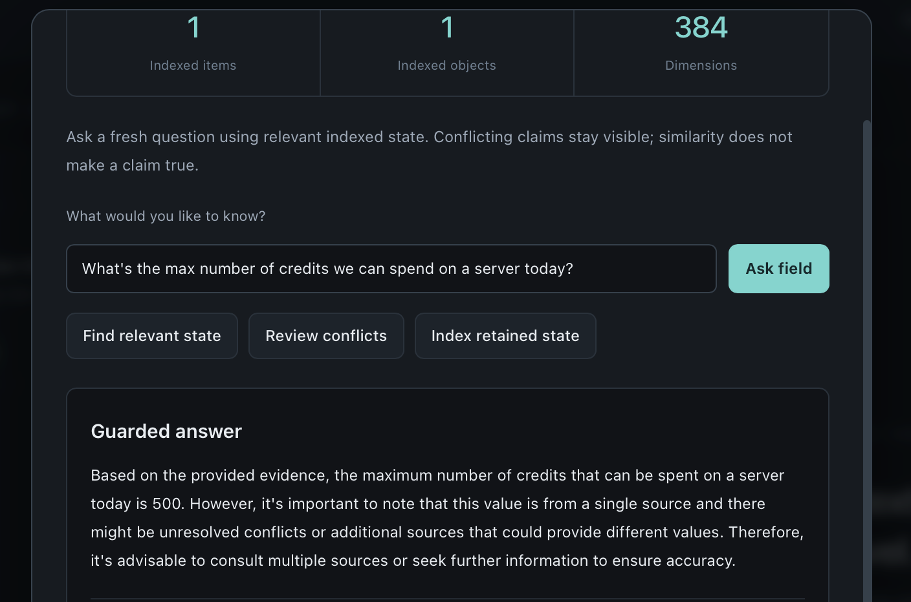

Machines, not mysteries.
Name a rig. Prepare it locally. Exchange public rig cards and approve the full fingerprints in both directions.
Public cards. Private keys stay home.
An inbox for the useful things your local AI should carry forward. Share reviewed context with an approved rig. Continue in channel chat with shared notes you can inspect. Keep control of both.
Channels + local chat + shared-note receipts. Now with the composer fix included.
Public 1.8 release. Mac fix retained. Python and local Ollama required.
Interface illustration, not a live session. Actual test photograph below.
Think signed state mail for your local AI rigs: a small, deliberate place to carry useful facts, decisions, and constraints between the computers you own.
Name a rig. Prepare it locally. Exchange public rig cards and approve the full fingerprints in both directions.
Paste context, make a local summary or keep the exact text, then review it before sending. Inbox, Sent, and receipts keep the work visible.
The receiver indexes accepted material locally. Ask a new question through Braid and inspect the evidence behind the answer.
Your rigs are the contacts. Channels organize the project notes you deliberately share between them, and bring the relevant material into ordinary chat inside Archangel.
Create a channel once, share its signed card, and choose which rigs receive your outgoing notes, which publishers may send into your local copy, and whether notes can be used in your answers. Those are three separate choices, made on each rig.
Keep talking to your local model in Channel Chat. Relevant, permitted notes can join the conversation without another trip to the Shared field window. The inbox and individual handoff receipts are still there.
What should we carry into the launch?
The launch color is amber. The threshold notes disagree: 73 and 75 remain unresolved.
Three exact source notes supplied to this example answer:
In the app, expand this receipt to inspect the exact text, originating rig, source objects, arrival time, and whether the guard substituted a fallback.
Illustrative conversation, not a live model result. The count describes unique source atoms actually supplied to the completion request, including retained-history and conflict evidence. It does not measure attention or certify truth. One longer handoff can supply several atoms.
Write a note, review its exact text and destinations, then confirm. A channel name is not permission: importing a card enables no sending, receiving, or chat use by itself.
Chosen topic phrases can suggest a local draft, never an automatic transmission. Automatic sharing separately requires channel authorization, a chat opt-in, and a newly typed /note message. Rate limits and pause controls stay visible.
Explore conflicts within the channel and see unresolved alternatives alongside the answer evidence. Archangel does not quietly pick a winner or turn a newer note into authority. Formal resolution authoring remains future work.
One field, supported paths. Direct approved compatible peers, signed-file transfer, and exported QR reels carry the signed channel identity into the same channel admission checks. Camera scans need physical testing and compatible decoder support. Managed Relay remains forthcoming; 1.8 does not provision it. Chat integration is inside Archangel, not an automatic bridge into unrelated chat apps.

A practical project constraint crossed from the Linux laptop to the MacBook Air. The Mac accepted and indexed it. A fresh, differently worded field question then returned the transmitted limit.
Shared note: “spend no more than 500 credits on our second server today”
“What's the max number of credits we can spend on a server today?”
The screenshot preserves the full response, including its generic cautions. It returned the correct number but did not repeat “second server.” This demonstrates retrieval of shared context, not automatic spending enforcement. The demo predates 1.8; it is not a new 1.8 or Channel Chat qualification.
▶ PROOF On Camera: Two Ollama LLMs Shared State
The September 5 a5 video shows the Cobalt handoff and a fresh field answer on Linux. It is separate from the September 7 spending test. Earlier field-answer photograph ↗
The same Archangel client in both columns. No membership required for local transfers. Join for human help, early access, and forthcoming managed reach.
Connect the rigs you own. Keep the useful context moving.
Python, Ollama, and models are separate prerequisites. About the QR tools.
Everything in the free client, plus a closer connection to the build.
Support starts with membership; early builds are supplied as released. Managed Relay is forthcoming, not an active service included at checkout today.
Membership adds support and reach. It does not unlock the free client. LAN and QR tools stay free. Managed Relay has no announced activation date; its two-device minimum applies once the service is launched and provisioned during an active membership.
Human support is reasonable and best-effort, not a 24/7 service or production SLA. Early access covers member releases and experiments as they become available during your active annual term; there is no fixed release schedule. Public software releases remain free.
Forthcoming Managed Relay access covers at least two unique devices per active membership once launched and provisioned. Service use will be subject to compatibility, capacity, location, and fair-use limits; no unlimited bandwidth or additional-device entitlement is promised here. A payment receipt is not a relay credential. Support starts when membership begins; there is no guaranteed relay launch date within the term.
Membership does not include computers, hosted inference, model subscriptions, Python, Ollama, or model downloads. Your local models remain yours to provision and run. This site update does not activate a relay or change existing subscriptions.
The Channels experience, with the new-message composer corrected and the Mac startup fix included. One complete 1.8 bundle for every rig. The demonstrated a6 predecessor remains available below.
Standard CPython 3.10–3.13. Get Python. Choose a supported version, not 3.14.
Local Ollama + an embedding model. The first-run guide uses all-minilm. Get Ollama.
A local chat model for Channel Chat. The earlier a5 field-answer demo used mistral:latest.
Begin with two machines on the same private LAN. No Intersignal relay enrollment is needed for that path.
Channels · Composer + Mac fixes included · 1.53 MB ZIP
The same complete bundle for macOS, Linux, and Windows.
The Mac fix is already in this ZIP. It skips an unsupported default Python, finds a supported installed runtime, and prints its selection.
sh "Start Braid.command"Terminal alternative: run the command above inside the extracted folder. Python must already be installed. No global Python setting is changed. Mac security guidance.
Right-click an empty space in the folder, choose Open in Terminal, and run:
sh "Start Braid.sh"Run as your normal user, without sudo. The Linux launcher uses your default python3. For an unsupported default, explicitly use an installed supported version, such as python3.12 start_braid.py.
Open the extracted folder in Terminal. With standard Python 3.12 installed, use:
py -3.12 start_braid.pyUse -3.13 instead when that is your installed supported version. Start Braid.cmd is also included, but uses the default runtime. This is not an Authenticode-signed installer.
Opens Google Drive in a new tab. Choose Download for the complete launcher bundle, not just the source archive.
f3126339b55dfc90a2dd4ea8a36c83342096745295fbabbbc0976cdf4a640f11SHA-256 of the complete ZIP. Consistency check, not a publisher signature.
Start with a reviewed exact note and one receiver. Keep automation off until the basic channel path works on your machines.
Launch 1.8 on both rigs. For a new pair, exchange rig cards, compare the full fingerprints, and approve in both directions. Existing a6 cards remain compatible.
Create Cobalt on the Mac and import its signed channel card on Linux. Select sending, receiving, and use-in-chat permissions independently.
Write one exact note. Review destinations, confirm once, and inspect the remote acceptance and indexing receipt.
Ask on Linux with shared notes enabled. Expand Using 1 shared note to inspect the exact supplied evidence.
Three different confirmations. A local note commit is not a remote receipt. An uncertain outcome is not permission to resend.
Braid carries explicit, signed semantic material. Each receiver applies its own acceptance policy and builds its own searchable 384-dimensional field. Retrieved evidence and model output stay inspectable. Signatures and similarity do not make a claim true.
We are building toward richer validated interchange states across independent AI systems. Today’s release is the foundation, not native hidden-state transfer. It does not move model weights, KV cache, or a complete model mind.
Yes. In 1.8, Share summary and the N shortcut open blank at Write, instead of reopening an old saved delta. Open Drafts explicitly to resume saved work. New message, X/Escape, and Discard draft have distinct actions; discarding never clears accepted objects or delivery history. The single saved-draft slot asks before replacing other work. Composer guide.
Unique exact semantic atoms supplied to the successful completion request, including evidence carried with retained conversation history and any supplemental conflict notes. Identical atoms count once even with several source objects. It is not the number of documents, every retrieved candidate, verified facts, or the model's measured internal attention. Expand the receipt to inspect what went in and whether a guard fallback supplied the final answer.
No. Reviewed notes are the default. Topic phrases can create local drafts only. Automatic sending requires a channel policy, a separate chat opt-in, and a new user-authored /note message. Incoming notes, model replies, and ordinary conversation never auto-forward. Channel Chat is inside Archangel; unrelated chat applications are not intercepted.
The original shortcut could choose an unsupported default Python and stop before opening Braid. The integrated Mac launcher checks supported installed runtimes, including common Homebrew and Python.org locations, then prints the interpreter it selects. It does not install Python, alter global aliases, or retry application failures under another interpreter. That correction is retained in 1.8, alongside the fix that makes Share summary start a genuinely new message.
Not for the direct private-LAN workflow shown here. Rigs connect to the approved endpoint in the exchanged card. Managed Relay / Jump Kit is a separate enrollment and configuration path, not a switch activated by downloading Archangel. No production relay availability or WAN result is implied by this LAN demonstration.
The completion model is receiver-local; Braid carries explicit material rather than requiring identical model weights. For the simplest first run, use the guide’s matching all-minilm embedding setup. The earlier a5 field-answer test used mistral:latest for the receiver’s configured completion model. The spending-demo screenshot shows a returned 500-credit value but does not display its exact model digest or raw query record; it is not a full compatibility matrix.
The founder reported a September 7 a6-line Linux-to-Mac run: the Mac receipt shows acceptance/indexing, and a fresh Shared field question returned the supplied 500-credit value. The original answer screenshot is shown above; its scope and caveats are preserved in the demo record. The earlier a5 video is separate evidence. For 1.8, 338 Python tests and six subtests passed with fixture models, plus composer-browser and installed-launcher checks. Those are not a new physical 1.8 run. Read 1.8 verification notes and the physical checklist.
Stop at the receipt. Check the remote outcome in Notes & activity or the retained Inbox/Sent receipt. Confirm that both rigs imported the same channel card, the publisher is allowed, and shared-note use is enabled. Drafts and local commits alone do not prove remote acceptance. An unconfirmed receipt is not permission to resend. Open the troubleshooting guide.
Archangel's local Messenger, LAN transfers, QR reel / chunk tools, receiver-local field, and public releases are free. Founding Membership adds human support, first access to new versions and experiments, and forthcoming Managed Relay access for at least two unique devices once launched and provisioned during an active term. The QR tools use the Advanced workspace and depend on compatible camera/decoder support. Compare both options.
The release includes its full source and current build evidence. The September 7 record documents a predecessor a6-line handoff, receipt and fresh 500-credit field answer. The earlier a5 demonstration remains separately available.
Looking for the older native installers? They remain in the historical download archive. They do not contain Archangel Messenger.